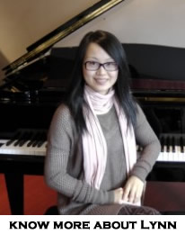

Top 5 Frequently Asked Questions Answered by Lynn

- How old do you have to be to start Music Lessons?
- Typically students starting private music lessons are in the 5 - 9 year old age range depending on the instrument. Some of our locations do offer special keyboard based group programs that cater to preschool children , ages 3 - 5. The most common choices for private lessons are piano/keyboard, guitar, voice and violin. Both the guitar and the violin offer the convenience of smaller scale instruments for younger beginners. Students wishing to learn to play wind instruments such as trumpet, trombone and saxophone generally start after age 10 due to the physical requirements some of these instruments pose. You will find the teachers and lesson staff at Long and McQuade quite willing to discuss your child's situation.
- Do I need to own an instrument to take lessons?
- It is necessary to have an instrument for regular practice to enable the student to learn and progress with his or her newly acquired skills. For those who do not have an instrument , Long and McQuade offers convenient and affordable student instrument rental plans for new players.
- How long does it take to learn to play an instrument?
- New students with regular practice will see results very quickly on their chosen instrument. It is important for the students and parents to approach the study of a musical instrument as a long term process much like we would look at learning a new language .The results should be both fun and rewarding as the student's skill level improves incrementally. Hopefully, the study and learning to play a musical instrument will become a fulfilling life long pursuit.
- Can my child prepare for Royal Conservatory Examinations?
- Long and McQuade teachers are able to prepare students for nationally accredited examinations with the Royal Conservatory of Music if they so desire. The successful completion of specific RCM examination levels ( usually Grade 8 and higher) with the corresponding theory level exam is recognized as an equivalent secondary school music credit in many provinces. Consult your provincial Ministry of Education for music equivalency requirements.
- Do we need a piano or can we use a keyboard?
- A common question as there are many instrument choices for parents of new piano students today. The traditional acoustic piano is certainly well - suited for piano study as are many of the newer and affordable "weighted action" digital pianos. The smaller portable keyboards will provide touch sensitivity for some dynamic expression but because their keyboard actions are "unweighted" , they will make it more difficult for the student to develop the hand and finger strength and control that are required for piano technique. Long and McQuade offers convenient rental and purchase plans to suit any budget for keyboards, digital pianos as well as for acoustic pianos.